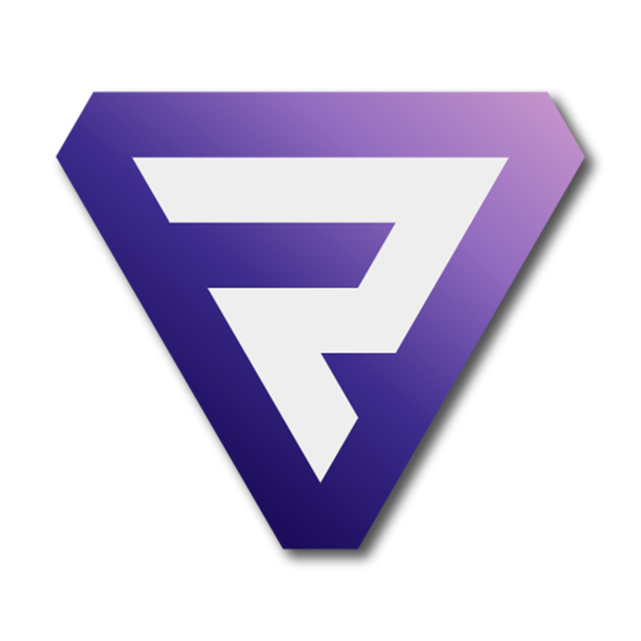

<mat-toolbar>
  <button mat-flat-button id="menu_button" color="primary" (click)="opened=!opened">
    <mat-icon>menu</mat-icon>
  </button>
  <div class="home-button" [routerLink]="['/projects']">
    
    <span>ProFi</span>
  </div>
  <span class="example-spacer"></span>
</mat-toolbar>

<mat-sidenav-container hasBackdrop="false">
  <mat-sidenav [(opened)]="opened">
    <nav>
      <ul>
        <li routerLinkActive="active" [routerLink]="['/projects']"><a>Projekte finden</a></li> <!-- /projects -->
        <li routerLinkActive="active" [routerLink]="['/project']"><a>Mein Projekt</a></li>  <!-- /project?project_id=...-->
        <li routerLinkActive="active" [routerLink]="['']"><a>Meine Favoriten</a></li> <!-- /user/favorites-->
        <li routerLinkActive="active" [routerLink]="['/profile/', user.id || 1]"><a>Mein Profil ("HOME")</a></li> <!-- /user/profile -->
        <li routerLinkActive="active" [routerLink]="['profilesettings/', user.id || 1]"><a>Einstellungen (TBI)</a></li> <!-- /user/settings-->
      </ul>
    </nav>
    <hr>
    <button mat-raised-button color="primary" (click)="logoutUser()">
      {{ userName }} ausloggen
    </button>
  </mat-sidenav>
  <mat-sidenav-content>

    <router-outlet></router-outlet>

  </mat-sidenav-content>
</mat-sidenav-container>